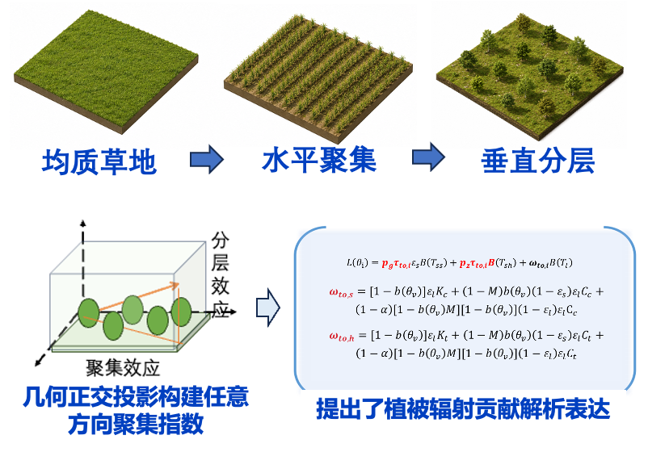
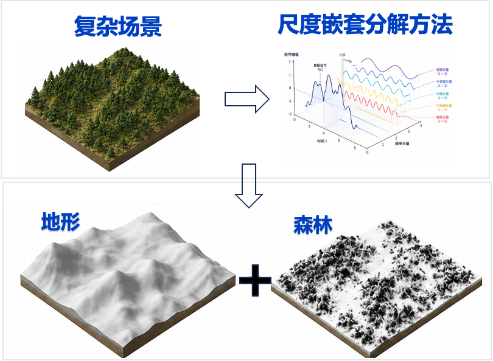
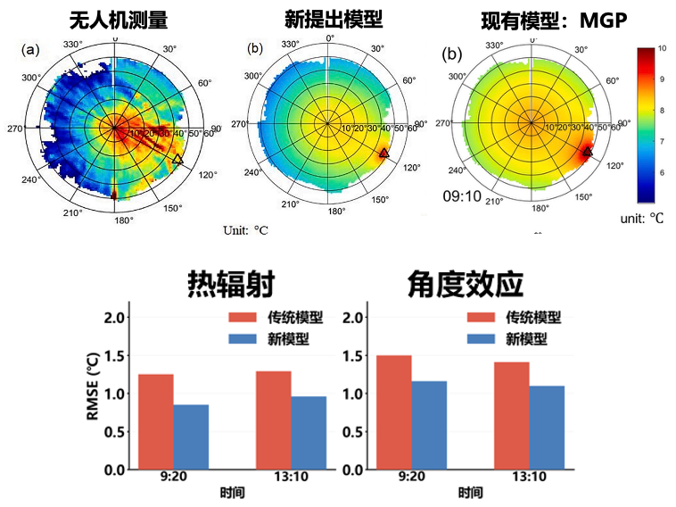
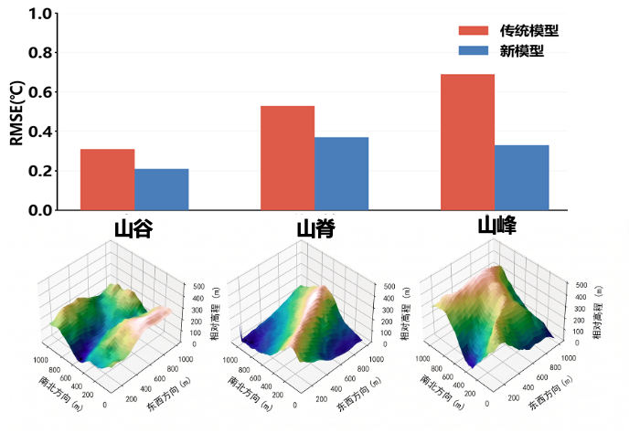
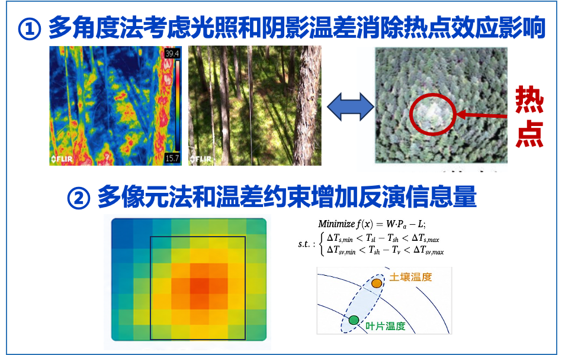
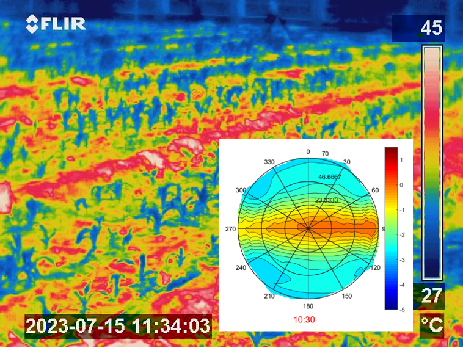
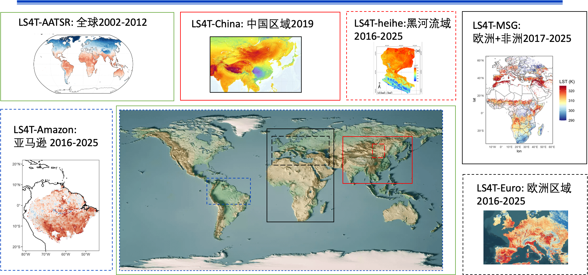
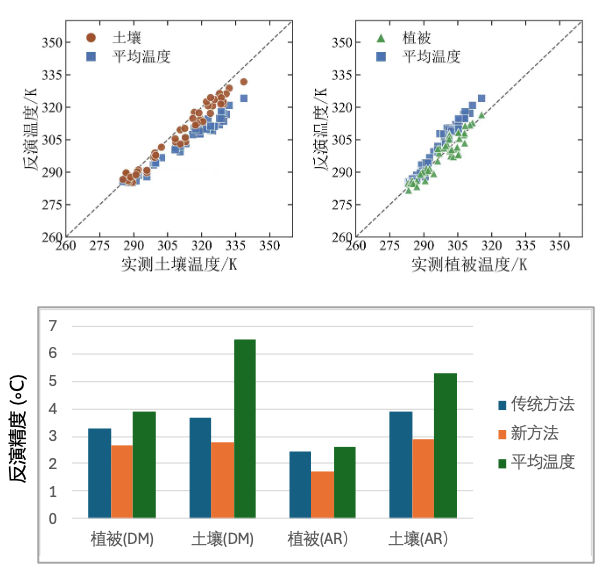

2025 — 2026
访问学者Visiting Scholar
法国 CESBIOCESBIO, France
我从事热红外定量遥感研究，围绕辐射建模、温度反演与数字孪生三个方向，关注地表结构、热辐射传输与组分温度之间的联系，并探索温度信息在生态系统与地表环境研究中的应用。I study thermal infrared remote sensing in three areas: radiative transfer modeling, temperature retrieval, and digital twins. My research focuses on the relationships between surface structure, radiative transfer, and component temperatures, and explores applications of temperature information to ecosystems and the land surface environment.
bianzj@aircas.ac.cn · https://bianzj.github.io/ · https://github.com/bianzj

共发表 SCI 论文48篇，第一/通讯作者发表 SCI 论文22篇，其中中国科学院一区/TOP 刊物论文17篇，包括 Remote Sensing of Environment（RSE）8篇（第一作者6篇、通讯作者2篇）、ISPRS Journal of Photogrammetry and Remote Sensing（ISPRS）1篇、IEEE Transactions on Geoscience and Remote Sensing（IEEE TGRS）7篇（第一作者4篇、通讯作者3篇）；第一作者出版专著1部《复杂地表热红外遥感模型：理论与方法》；第一发明人授权国家发明专利5项（共9项）；谷歌学术引用1400余次。Published 48 SCI-indexed papers, including 22 as first or corresponding author. Of these, 17 appeared in journals classified as Q1 or TOP by the Chinese Academy of Sciences, including 8 in Remote Sensing of Environment (RSE; 6 as first author and 2 as corresponding author), 1 in ISPRS Journal of Photogrammetry and Remote Sensing, and 7 in IEEE Transactions on Geoscience and Remote Sensing (IEEE TGRS; 4 as first author and 3 as corresponding author). Published one monograph as first author, Thermal Infrared Remote Sensing Models for Complex Land Surfaces: Theory and Methods. Holds 9 granted Chinese invention patents, including 5 as first inventor, and has over 1,400 citations on Google Scholar.
主持国家自然科学基金2项（青年项目1项、面上项目1项）、省部级项目3项。参与国家自然科学基金委重点项目2项、国家重点研发项目2项、高分辨率对地观测重大专项等。Served as principal investigator on 2 National Natural Science Foundation of China (NSFC) projects (1 Young Scientists Fund project and 1 General Program project) and 3 provincial or ministerial projects. Participated in 2 NSFC Key Program projects, 2 National Key R&D Program projects, and projects under the major program for high-resolution Earth observation, among others.
复杂结构特征对热辐射影响机制不清The mechanisms by which complex surface structures affect thermal radiation remain unclear
构建了植被场景热红外辐射传输模型 TIRT，厘清了“植被冠层→聚集效应/分层特征→热辐射信号”的关联关系；揭示了植被结构与地形特征对热辐射的复合影响机制，将 TIRT 模型拓展到植被+地形与植被+城市复合场景。Developed TIRT, a thermal infrared radiative transfer model for vegetation scenes, and clarified the links among vegetation canopies, clumping effects and stratification, and thermal radiation signals. Revealed the combined effects of vegetation structure and terrain on thermal radiation, and extended TIRT to coupled vegetation–terrain and vegetation–urban scenes.

植被聚集、分层与辐射贡献解析表达Vegetation clumping, stratification and analytical radiation contributions

复杂场景的地形与森林尺度嵌套分解Scale decomposition of terrain and forest in complex scenes

无人机测量与模型模拟的方向性及误差对比Directional patterns and errors: UAV measurements and model simulations

山谷、山脊、山峰场景的方向温度模拟误差对比Directional temperature simulation errors over valley, ridge and peak scenes
点击图片查看原图Select an image to view the original
像元内地物真实物理温度反演方法不足Methods for retrieving the true physical temperatures of surface components within a pixel remain insufficient.
权衡反演信息量与稳定性，提出了三组分温度反演方法，考虑热点效应降低了反演噪声；基于贝叶斯优化理论，提出了热辐射角度效应、空间相关与温差约束结合的组分温度反演方法，研制首套全球尺度长时序组分温度产品。Balanced retrieval information and stability to develop a three-component temperature retrieval method, incorporating hotspot effects to reduce retrieval noise. Based on Bayesian optimization, developed a component temperature retrieval method that combines thermal radiation angular effects, spatial correlation, and temperature difference constraints, and produced the first global component temperature product with a long time series.

热点效应、多像元信息与温差约束Hotspot effects, multipixel information and temperature difference constraints

地表热成像与热辐射角度变化示例Surface thermal imagery and angular variations in thermal radiation

AATSR、SLSTR、MSG 全球与区域组分温度产品Global and regional component temperature products from AATSR, SLSTR and MSG

土壤与植被组分温度验证及与平均温度的对比Evaluation of soil and vegetation component temperatures and comparison with mean temperatures
点击图片查看原图Select an image to view the original
面向真实地表状况和典型应用的热红外遥感传感器指标优化仿真论证体系缺失A simulation framework for optimizing and assessing thermal infrared remote sensing sensor specifications under real surface conditions and representative applications is lacking.
以组分温度作为桥梁，耦合辐射传输模型与能量平衡过程，创建了热红外遥感动态模拟数字孪生系统 STREAM，实现了热辐射“时空角”多维耦合模拟；研发全要素耦合的在轨成像模拟系统，论证并提出了传感器波段和角度优选方案。Used component temperatures to link radiative transfer models with energy balance processes, creating STREAM, a digital twin system for dynamic thermal infrared remote sensing simulation that couples temporal, spatial, and angular variations in thermal radiation. Developed a fully coupled system for simulating satellite imaging in orbit, and evaluated and proposed preferred sensor spectral bands and viewing angles.

地表—大气—轨道—传感器耦合示意Coupled surface, atmosphere, orbit and sensor processes

Landsat 与 STREAM 地表温度空间对比Spatial comparison of Landsat and STREAM land surface temperatures

StreamSensor 卫星轨道、观测几何与成像模拟界面StreamSensor satellite orbit, observation geometry and imaging simulation interface

不同地类下 STREAM、ERA5 与 GLDAS 的 Bias 和 RMSE 对比Bias and RMSE of STREAM, ERA5 and GLDAS across land cover types
点击图片查看原图Select an image to view the original
面向遥感数字孪生与模拟实验的软件工具。访问项目仓库，了解功能、安装方式和使用文档；TIRT 与 LS4T 也可通过各自仓库获取。Software for remote sensing digital twins and numerical experiments. Visit the repository for features, installation instructions, and documentation. TIRT and LS4T are also available in their respective repositories.
欢迎就热红外遥感、辐射传输、温度产品与遥感数字孪生交流。For discussions on thermal infrared remote sensing, radiative transfer, temperature products, and remote sensing digital twins.